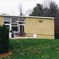

|  |
Adrian Hall
Built in 1865
Office of the current College President |
Completed in 1957, Adrian Hall was among the first buildings constructed by the Marist Brothers. It was named in honor of Brother Adrian August, who was a well-known Music Master and Chemistry professor, who also served as long-time Master of Scholastics. The architectural design was created by Brother Nilus Vincent. He incorporated horizontal lines into the design to align with nature, as he believed the building was not only for space, but a shelter for the spirit of man.
The estimated cost to build Adrian was $75,100, but was built for only $30,000. Originally, Adrian was meant to accommodate resident students and their parents, and to become a place where they could greet visitors on Sundays. The building first contained a sitting room and entertainment center, but later became the home of the Alumni Office and Marist Poll. It was also used as the advancement office, where people discussed topics regarding donations. Students used Adrian as a common space to hang out, eat, and study.
In 2000, Adrian Hall was demolished to make way for the construction of the James A. Cannavino Library.